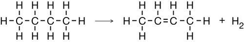

Module 6—Petrochemicals
 Read
Read
Alcohols like methanol and ethanol can be reactants in chemical processes that produce other petrochemicals. Read “Elimination Reactions” on pages 431–433 in the textbook.
 Self-Check
Self-Check
SC 2. Complete “Practice” questions 18–20 on page 433 of the textbook.
Self-Check Answers
Contact your teacher if your answers vary significantly from the answers provided here.
SC 2.
Practice 18.
Practice 19.
- 
Practice 20.
Cracking of Propane
Elimination in Strongly Basic Conditions (Dehalogenation)
Elimination of an Alcohol
 Module 6: Lesson 3 Assignment
Module 6: Lesson 3 Assignment
Retrieve the copy of the Module 6: Lesson 3 Assignment that you saved to your computer earlier in this lesson. Complete Part 1 of the Assignment. You will receive information later in the lesson on when to complete Part 2 and on when to submit your Assignment to your teacher.